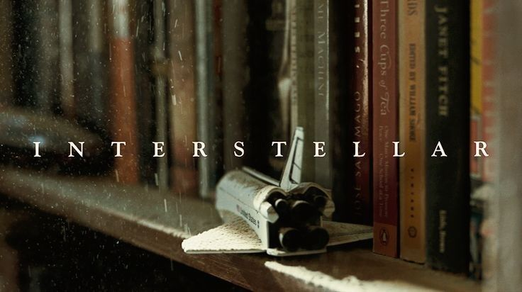
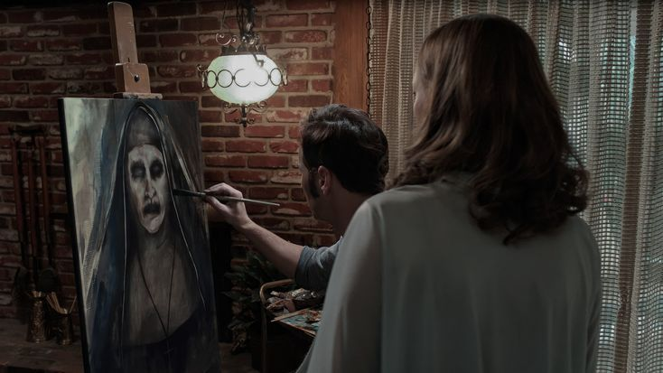
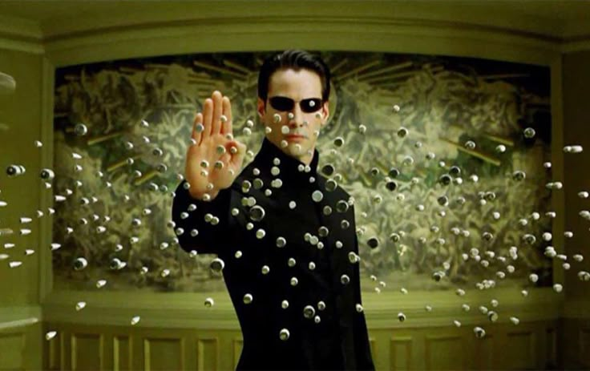

Киноискусство занимает важное место в культуре человечества. Оно способно рассказывать истории, передавать эмоции и вдохновлять зрителей по всему миру. В этой статье мы рассмотрим историю кино, основные жанры и культовые фильмы, которые оставили след в истории.
Кинематограф зародился в конце XIX века. Братья Люмьер в 1895 году впервые представили публике короткометражные фильмы, положив начало новой эре искусства.
Фильмы делятся на множество жанров, каждый из которых привлекает свою аудиторию.
Драматические фильмы рассказывают истории о жизни, переживаниях и судьбах людей. Пример: "1+1" – трогательная история дружбы парализованного аристократа и его сиделки, который помогает ему заново обрести радость жизни.
Фильмы с элементами будущего, технологий и космоса. Пример: "Интерстеллар".

Фильмы, созданные для того, чтобы напугать зрителя. Пример: "Заклятие".

Динамичные сцены, погони, перестрелки. Пример: "Матрица".

Некоторые фильмы стали настоящими легендами и оказали влияние на культуру.